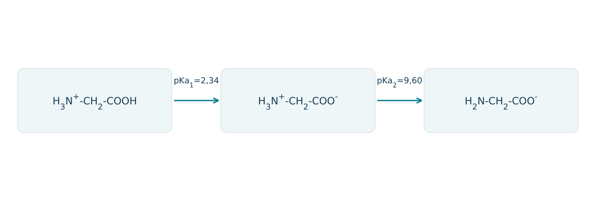
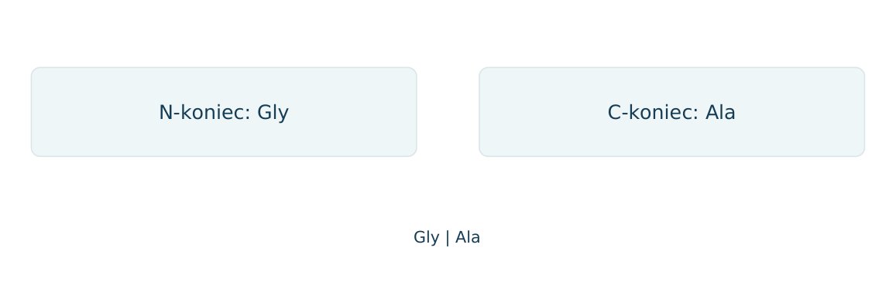
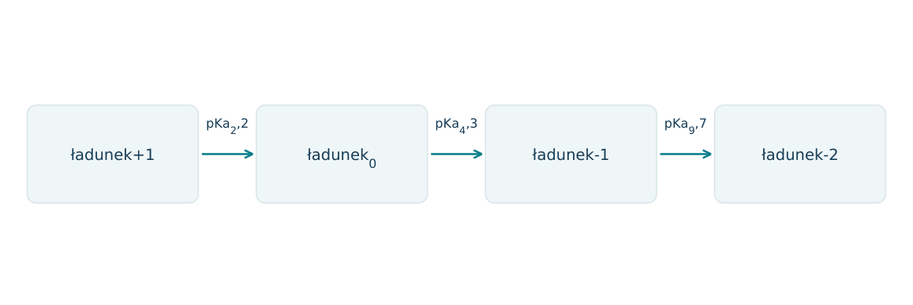
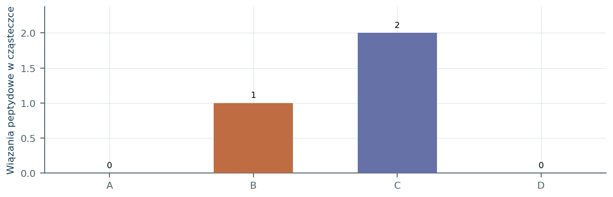
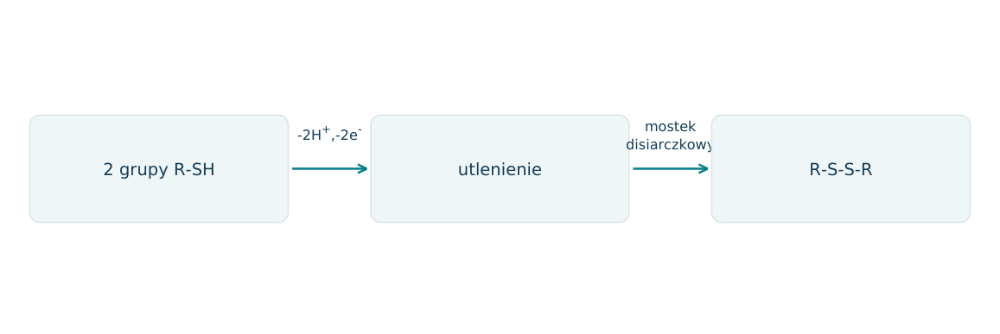
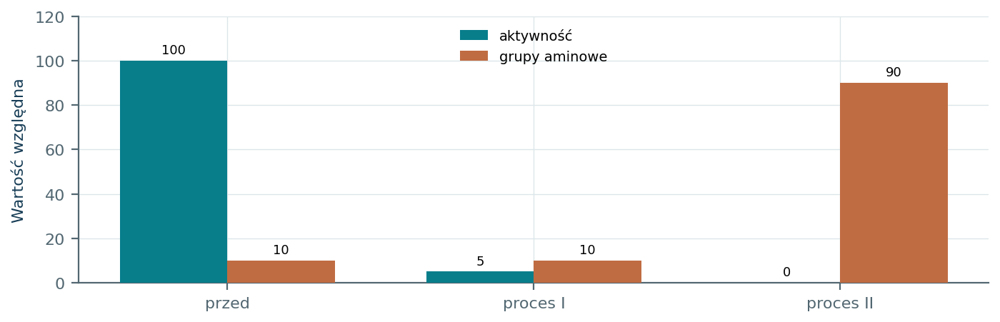
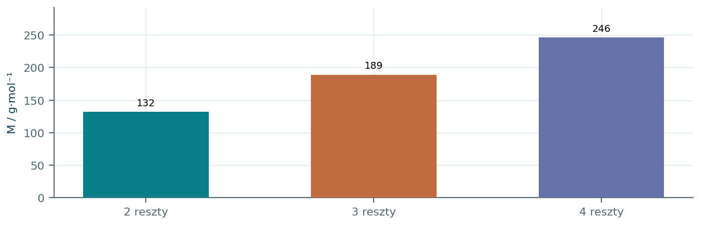
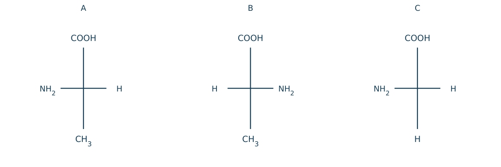

22.01 · 1 pkt
Napisz ogólny wzór α-aminokwasu i wskaż położenie grup funkcyjnych.
Rozwiązanie
- H2NCH(R)COOH; NH2 i COOH są związane z tym samym atomem C α.
50 zadań · 103 pkt · odpowiedzi rozwijane po samodzielnej próbie
← KatalogZadania PDFRozwiązania PDFDane do obliczeń: H 1; C 12; N 14; O 16; Na 23; Mg 24; Al 27; P 31; S 32; Cl 35,5; K 39; Ca 40; Cr 52; Mn 55; Fe 56; Cu 64; Zn 65; Ag 108; Br 80; I 127; Ba 137 (g/mol). NA = 6,02·1023 mol-1. Vm = 22,4 dm3/mol w warunkach normalnych (0°C, 1013 hPa). W 25°C Kw = 10-14. Dane podane w zadaniu mają pierwszeństwo.
Napisz ogólny wzór α-aminokwasu i wskaż położenie grup funkcyjnych.
Oceń zdania A i B, wpisując P albo F. Każde zdanie fałszywe popraw lub krótko uzasadnij. A: Jon obojnaczy ma ładunki formalne o przeciwnych znakach. B: Denaturacja zawsze oznacza pełną hydrolizę wiązań peptydowych.
Dlaczego glicyna jest achiralna, a alanina chiralna?
Co oznacza szereg L aminokwasów w projekcji Fischera z COOH u góry i resztą R na dole?
Napisz wzór jonu obojnaczego glicyny.
Wyjaśnij, dlaczego jon obojnaczy nie jest cząsteczką pozbawioną ładunków formalnych.
Napisz reakcję jonu obojnaczego glicyny z H+ oraz z OH-.
Jaki ładunek przeważającej postaci glicyny przewidujesz w silnym kwasie i silnej zasadzie?
Wyjaśnij pojęcie punktu izoelektrycznego pI.
Aminokwas ma pI=6,0. W elektroforezie przy pH=2 przemieszcza się ku której elektrodzie? Uzasadnij.
Dla tego samego aminokwasu przy pH=10 przewidź znak ładunku i kierunek elektroforezy.
Napisz kondensację dwóch cząsteczek glicyny do dipeptydu.
Napisz wzory dwóch różnych dipeptydów utworzonych z jednej glicyny i jednej alaniny.
Dlaczego Gly-Ala i Ala-Gly są różnymi związkami mimo tego samego zestawu reszt?
Ile wiązań peptydowych ma liniowy tripeptyd i ile cząsteczek wody powstaje przy jego utworzeniu z aminokwasów?
Oblicz M dipeptydu Gly-Ala, M(Gly)=75 i M(Ala)=89 g/mol.
Oblicz M liniowego tripeptydu Gly-Ala-Gly.
Liniowy peptyd z 5 reszt ma sumę mas molowych wolnych aminokwasów 525 g/mol. Oblicz M peptydu.
Peptyd ma M=246 g/mol i składa się wyłącznie z reszt glicyny. Oblicz liczbę reszt w łańcuchu liniowym.
Ile moli wody zużyje całkowita hydroliza 0,10 mola liniowego tetrapeptydu?
Zapisz hydrolizę Gly-Ala w zapisie do wolnych aminokwasów, pomijając ich równowagi kwasowo-zasadowe.
Liniowy peptyd H2NCH(CH3)CONHCH2CONHCH(CH2OH)COOH zawiera jakie reszty? Czytaj od końca N.
Podaj odczynnik i dodatni wynik próby biuretowej białka.
Czy glicyna daje dodatnią próbę biuretową? Uzasadnij.
Dlaczego zwykły dipeptyd nie daje typowej intensywnej dodatniej próby biuretowej?
Jak odróżnić roztwór białka i glukozy za pomocą zasadowego Cu2+ bez ogrzewania? Podaj różne barwy.
Jaki wynik daje reakcja ksantoproteinowa i z jakimi fragmentami białka jest związana?
Co opisuje struktura pierwszorzędowa białka?
Jakie oddziaływania stabilizują α-helisę i β-strukturę białka?
Podaj trzy różne czynniki stabilizujące strukturę trzeciorzędową.
Czym różni się denaturacja od hydrolizy białka?
Czy denaturacja musi zmieniać strukturę pierwszorzędową?
Porównaj wysalanie białka NaCl i denaturację solą metalu ciężkiego, uwzględniając możliwość odwrócenia.
Podaj dwa typowe czynniki denaturujące białko.
Po ogrzaniu roztworu enzymu aktywność zanikła, ale próba biuretowa pozostała dodatnia. Wyjaśnij oba wyniki.
Z hydrolizy 0,020 mola Gly-Ala-Gly otrzymano aminokwasy ilościowo. Oblicz n(Gly) i n(Ala).
Liniowy tripeptyd z dwóch reszt Gly i jednej Ala może mieć ile różnych sekwencji? Wypisz je.
Cysteina zawiera -CH2SH w łańcuchu bocznym. Co powstaje po utlenieniu dwóch takich grup w białku? Zapisz uproszczoną przemianę.
W peptydzie jest jedna wolna grupa NH2 i jedna COOH, bez jonizujących łańcuchów bocznych. Podaj dominującą formę końców w silnym kwasie i zasadzie.
Liniowy tripeptyd zawiera dwie reszty Gly i jedną Ala, M(Gly)=75 i M(Ala)=89 g/mol. a) Wypisz sekwencje. b) Oblicz M tripeptydu. c) Podaj produkty hydrolizy 0,020 mola peptydu. d) Przewidź próbę biuretową przed i po pełnej hydrolizie; wyjaśnij zmianę.
Każdy numer 41-50 oznacza jedno zadanie główne; podpunkty są oceniane osobno.
Dla glicyny podano pKa1=2,34 i pKa2=9,60. Schemat przedstawia kolejne formy. W punkcie izoelektrycznym prostego aminokwasu bez dodatkowych jonizujących grup pI=(pKa1+pKa2)/2.

22.41.1 (2 pkt) Oblicz pI i podaj dominującą formę przy pH=1 oraz 12.
22.41.2 (1 pkt) W którą stronę migruje glicyna przy pH=12 w polu elektrycznym?
22.41.3 (1 pkt) Czy zerowy średni ładunek przy pI oznacza brak jonów w roztworze?
pI=5,97; pH=1 kation, pH=12 anion.
Do dodatniej anody, ponieważ ma przewagę formy o ładunku-1.
Nie; dominuje jon obojnaczy mający wewnętrzne ładunki NH3+ i COO-.
Tripeptyd zawiera po jednej reszcie Gly, Ala, Ser. Po częściowej hydrolizie wykryto dipeptydy Gly-Ala i Ala-Ser; kolejność w każdym fragmencie zapisano od N do C. Po pełnej hydrolizie nie ma innych aminokwasów.
22.42.1 (2 pkt) Ustal sekwencję i zapisz wzór półstrukturalny peptydu.
22.42.2 (1 pkt) Oblicz M z M aminokwasów 75,89,105.
22.42.3 (1 pkt) Ile moli H2O zużywa pełna hydroliza 0,0200 mola tripeptydu?
Gly-Ala-Ser; H2NCH2CONHCH(CH3)CONHCH(CH2OH)COOH.
M=75+89+105-2·18=233 g/mol.
Dwa wiązania peptydowe: 0,0400 mola H2O.
Dipeptyd z Gly i Ala ma wolną grupę aminową glicyny, a wolną COOH alaniny. Na schemacie zaznaczono końce N i C. Nie ma cyklicznego produktu ani dodatkowych modyfikacji.

22.43.1 (2 pkt) Zapisz wzór dipeptydu i wskaż w nim wiązanie peptydowe.
22.43.2 (1 pkt) Podaj wzór sumaryczny i M, korzystając z 75+89-18.
22.43.3 (1 pkt) Czy Ala-Gly ma taki sam wzór sumaryczny i identyczne połączenia atomów?
H2NCH2CO-NHCH(CH3)COOH; wiązanie C(O)-N.
C5H10N2O3; M=146 g/mol.
Ten sam wzór sumaryczny, lecz inne połączenia: izomer sekwencyjny, nie ten sam dipeptyd.
Kwas glutaminowy ma dwie COOH i jedną NH2. Podano pKa1=2,2, pKaR=4,3, pKa2=9,7. Punkt izoelektryczny leży między dwiema dysocjacjami otaczającymi formę o ładunku 0. Schemat pokazuje ładunek po kolejnych odszczepieniach H+.

22.44.1 (2 pkt) Oblicz pI i podaj dominujący ładunek przy pH=7.
22.44.2 (1 pkt) Ile moli NaOH potrzeba, aby w modelu stechiometrycznym przejść od 1 mola formy całkowicie protonowanej do całkowicie odprotonowanej?
22.44.3 (1 pkt) Dlaczego wzór (pKa1+pKa2)/2 z glicyny nie może tu automatycznie oznaczać średniej skrajnych pKa?
pI=(2,2+4,3)/2=3,25; przy pH=7 dominujący ładunek-1.
3 mole; dwie COOH i jedna NH3+ oddają łącznie 3 protony.
Trzeba wybrać parę dysocjacji sąsiadujących z formą o ładunku 0; tutaj są to 2,2 i 4,3.
W zadaniu przyjmij, że wyraźna dodatnia próba biuretowa wymaga co najmniej dwóch wiązań peptydowych w cząsteczce. Próbki A-D to glicyna, Gly-Ala, Gly-Ala-Ser oraz mieszanina wolnych Gly, Ala, Ser.

22.45.1 (2 pkt) Wskaż próbkę dodatnią i wyjaśnij, dlaczego D nie zastępuje C.
22.45.2 (1 pkt) Oblicz minimalną liczbę wiązań peptydowych w liniowym pentapeptydzie.
22.45.3 (1 pkt) Czy dodatni wynik sam dowodzi obecności konkretnego białka, np.albuminy?
C; w D aminokwasy nie są połączone wiązaniami peptydowymi mimo obecności tych samych rodzajów reszt.
4.
Nie; wykrywa cechę grupy związków, nie unikalną sekwencję ani tożsamość białka.
Dwie grupy cysteinowe R-SH w peptydzie mogą utleniać się do R-S-S-R. Podano półreakcję 2RSH→RSSR+2H++2e-. Roztwór zawiera 0,00400 mola dostępnych grup SH; utlenienie jest całkowite, a utleniacz przyjmuje 2 elektrony na cząsteczkę.

22.46.1 (2 pkt) Oblicz liczbę moli mostków oraz minimalną ilość utleniacza.
22.46.2 (1 pkt) Czy powstanie mostka musi zwiększać liczbę wiązań peptydowych?
22.46.3 (1 pkt) Dlaczego redukcja mostków może zmienić kształt białka bez pełnej hydrolizy?
Mostki 0,00200 mola; utleniacz 0,00200 mola.
Nie; tworzy się S-S między łańcuchami bocznymi, bez koniecznego tworzenia C(O)-N.
Usuwa wiązania stabilizujące strukturę przestrzenną, zachowując szkielet peptydowy i sekwencję.
Dwie próbki białka poddano różnym procesom. W I aktywność spadła do 5%, ale liczba wolnych grup końcowych prawie się nie zmieniła. W II aktywność spadła do 0%, a liczba wolnych grup aminowych wzrosła wielokrotnie. Dane są względne.

22.47.1 (2 pkt) Powiąż I i II z denaturacją oraz hydrolizą, wskazując rozstrzygającą obserwację.
22.47.2 (1 pkt) Czy sama utrata aktywności rozróżniłaby oba procesy?
22.47.3 (1 pkt) Ile nowych grup końcowych aminowych powstaje po przecięciu jednego wewnętrznego wiązania peptydowego?
I denaturacja, II hydroliza; wzrost liczby końców aminowych świadczy o rozcinaniu wiązań peptydowych.
Nie; oba mogą znosić aktywność.
Jedna nowa końcowa grupa aminowa oraz jedna nowa końcowa karboksylowa.
Liniowy peptyd zbudowano wyłącznie z glicyny o M=75,0. Jego M=303 g/mol. Przy kondensacji każdemu powstałemu wiązaniu peptydowemu odpowiada utrata 1 cząsteczki H2O. Wykres pokazuje M obliczone dla różnych długości.

22.48.1 (2 pkt) Wyprowadź równanie M=75n-18(n-1) i wyznacz n.
22.48.2 (1 pkt) Oblicz masę glicyny po pełnej hydrolizie 0,303 g peptydu.
22.48.3 (1 pkt) Wyjaśnij, dlaczego masa produktów jest większa od masy peptydu.
M=57n+18;303=57n+18; n=5.
npeptydu 0,00100; nGly=0,00500; m=0,375 g.
W hydrolizie dołączają się cząsteczki wody: 4·0,00100·18=0,0720 g.
Na rysunku pokazano projekcje Fischera alaniny i glicyny. W standardowym zapisie dla α-aminokwasu z COOH u góry i resztą u dołu, NH2 po lewej oznacza konfigurację L. Znak skręcalności wymaga oddzielnego pomiaru.

22.49.1 (2 pkt) Przyporządkuj L/D dla alanin i określ relację A/B.
22.49.2 (1 pkt) Czy C ma centrum stereogeniczne? Uzasadnij.
22.49.3 (1 pkt) Czy mieszanina 50: 50 A/B musi mieć zerową skręcalność w tych samych warunkach?
A L-alanina, B D-alanina; enancjomery.
Nie; centralny C glicyny ma dwa identyczne atomy H.
Tak, racemat: wkłady enancjomerów mają przeciwne znaki i równą wartość.
Tetrapeptyd ma sekwencję Gly-Ala-Gly-Ala i nie ma jonizujących łańcuchów bocznych. W przyjętym modelu pełna hydroliza zasadowa zużywa po 1OH- na każde wiązanie peptydowe oraz 1OH- na wolną końcową COOH. Aminowa grupa końcowa jest początkowo obojętna.
22.50.1 (2 pkt) Zapisz liczbę wiązań i oblicz nNaOH dla 0,0100 mola peptydu.
22.50.2 (1 pkt) Podaj rodzaje i ilości molowe soli aminokwasów po hydrolizie tej próbki.
22.50.3 (1 pkt) Dlaczego do samego rozcięcia trzech wiązań nie wystarcza opis całkowitego zużycia zasady?
3 wiązania;3+1=4OH- na cząsteczkę; nNaOH=0,0400 mola.
0,0200 mola glicynianu i 0,0200 mola alaninianu sodu.
Dodatkowo zobojętnia się już istniejącą wolną COOH; trzeba uwzględnić oba procesy.